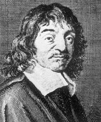

Hi, im rene descartes
Descartes' famous statement, "Cogito, ergo sum" (I think, therefore I am), encapsulates his philosophy of self-awareness and existence. This assertion emerged from his method of doubt, where he aimed to strip away all beliefs and assumptions to find something indubitable, something that could serve as a foundation for knowledge.